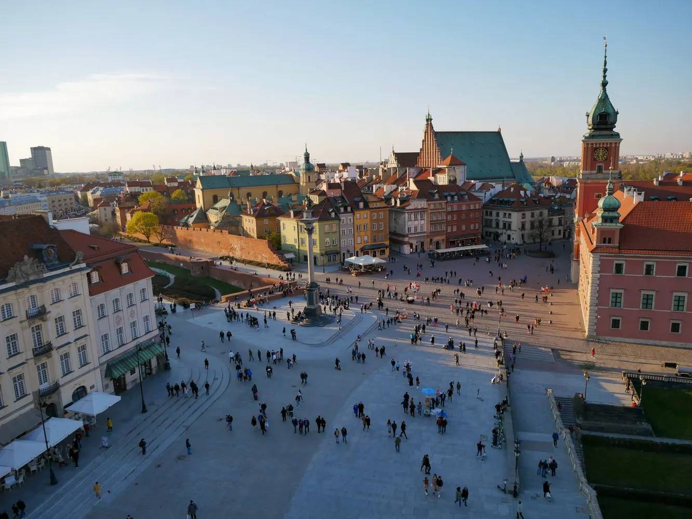
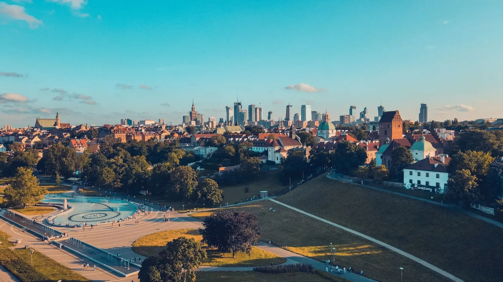
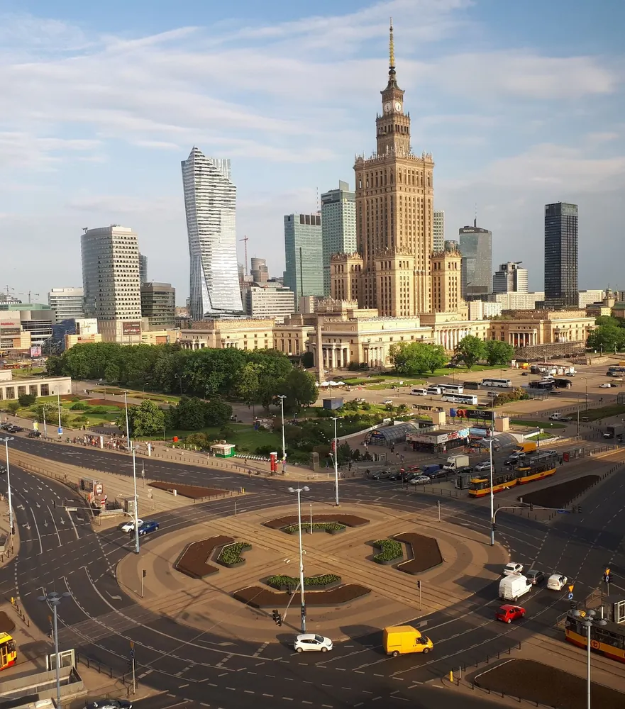
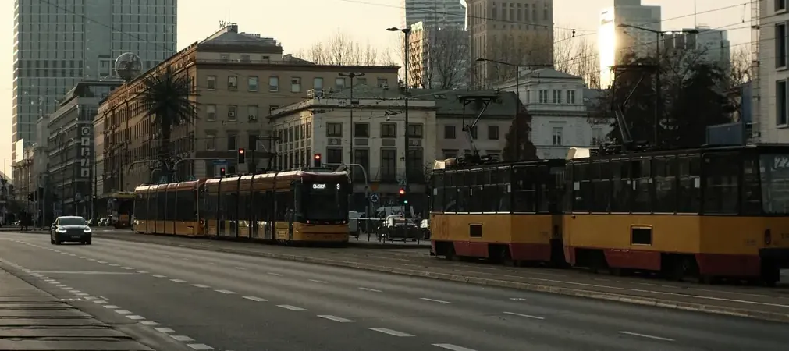
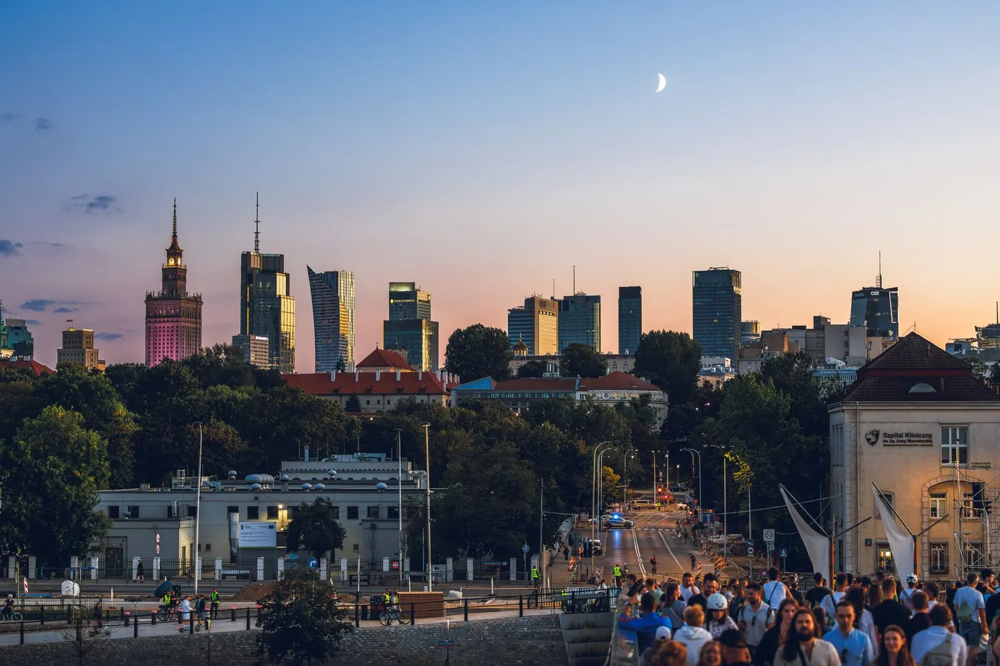
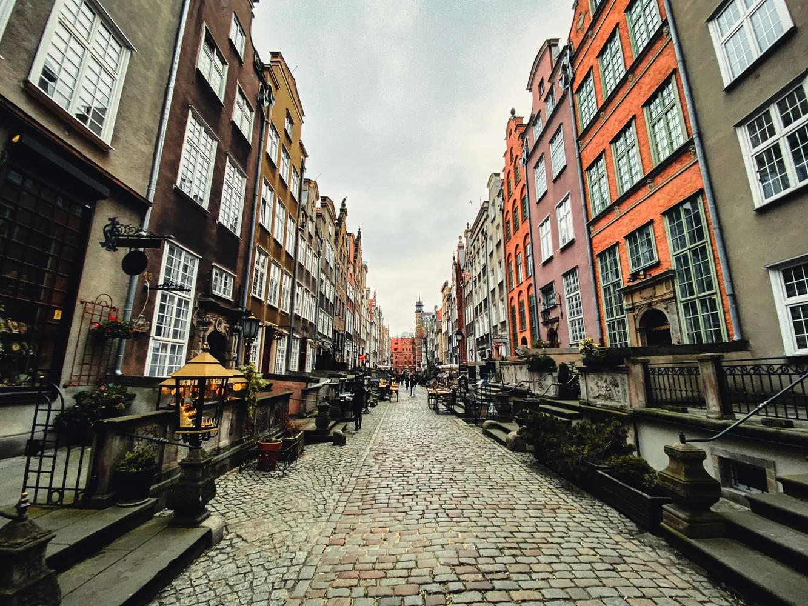
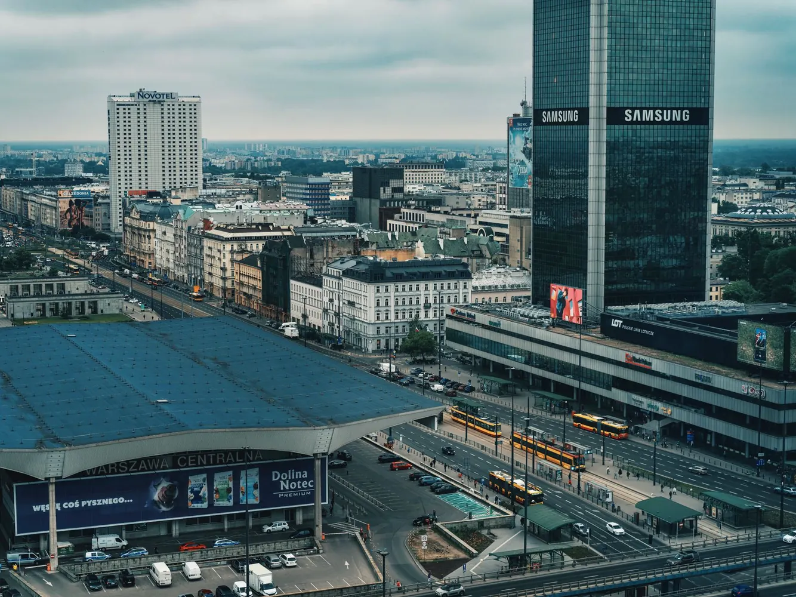
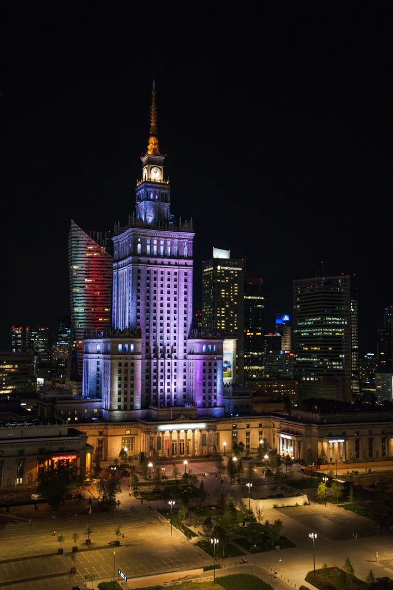

Місцева влада у Польщі: як рішення гмін впливають на простір
Що стоїть за міськими програмами та чому відкриті обговорення важливі для всіх, хто користується цими просторами.
Демонстраційні матеріали про політику Польщі. Заголовки, дати й анонси тут наведені лише для показу дизайну.

Що стоїть за міськими програмами та чому відкриті обговорення важливі для всіх, хто користується цими просторами.

Приклад того, як можна пояснити перебіг публічних слухань і допомогти читачеві відрізнити рішення від обговорення.
Як мешканці долучаються до формування порядку денного і де шукати документи, потрібні для конструктивної розмови.

Публічні дані допомагають побачити, які рішення ухвалюють органи влади та як простежити їх виконання.

Про приклади запитань, які варто поставити під час обговорення змін у громадському транспорті.

На що дивитися в документах про фінансування інфраструктури й чому важливо порівнювати плани з результатами.

Від першої ідеї до відкритого обговорення — демонстраційний матеріал про шлях невеликих змін.

Доступність стосується не одного маршруту, а всього простору: від переходів і зупинок до цифрових сервісів.

Як розподіляється відповідальність між ініціаторами проєктів, виконавцями та тими, хто оцінює результат.
Розбір контексту допомагає зрозуміти, які зміни пропонують і що ще не отримало остаточного рішення.